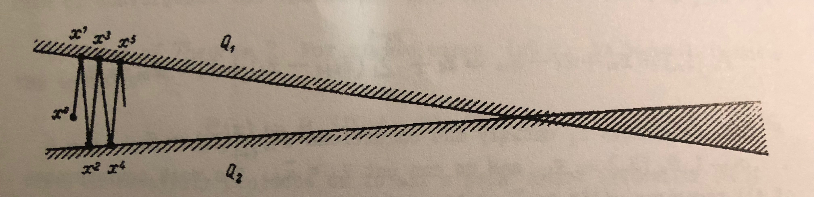
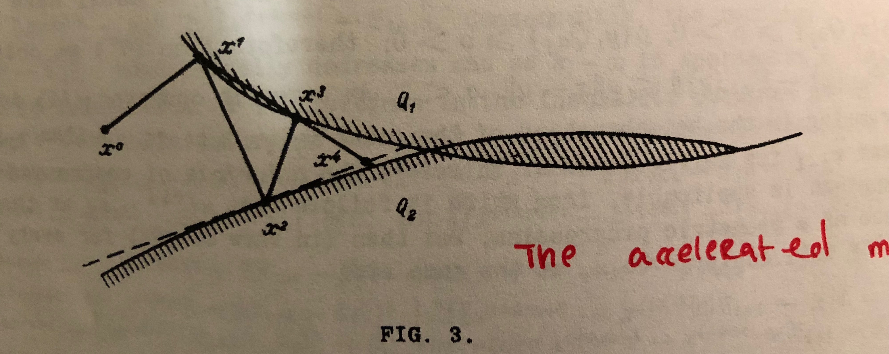

$$ \newcommand{\pmi}{\operatorname{pmi}} \newcommand{\inner}[2]{\langle{#1}, {#2}\rangle} \newcommand{\Pb}{\operatorname{Pr}} \newcommand{\E}{\mathbb{E}} \newcommand{\RR}{\mathbf{R}} \newcommand{\script}[1]{\mathcal{#1}} \newcommand{\Set}[2]{\{{#1} : {#2}\}} \newcommand{\argmin}[2]{\underset{#1}{\operatorname{argmin}} {#2}} \newcommand{\optmin}[3]{ \begin{align*} & \underset{#1}{\text{minimize}} & & #2 \\ & \text{subject to} & & #3 \end{align*} } \newcommand{\optmax}[3]{ \begin{align*} & \underset{#1}{\text{maximize}} & & #2 \\ & \text{subject to} & & #3 \end{align*} } \newcommand{\optfind}[2]{ \begin{align*} & {\text{find}} & & #1 \\ & \text{subject to} & & #2 \end{align*} } $$
Section Breakdown
I. Methods of successive projection [4.5 pp]
II. Proofs of [convergence results] theorems 1 and 2 [8.5 pp]
III. Rate of convergence [3.5 pp]
IV. Examples and Applications [7.5 pp]
This paper reviews methods of successive projections for finding a point in the intersection of an arbitrary number of convex sets; this problem is known as the convex feasibility problem. The family of methods under consideration traces back to the alternating projections method of the 1930s, due to Johnn von Neumann1. Though von Neumann cast it as a routine for finding a point in the intersection of two subspaces, his method was later generalized to the convex feasibility problem.
Convex cone programs that admit strong duality can be reduced to instances of the convex feasibility problem via the KKT system or the self-dual homogeneous embedding thereof.
(A) Strong convergence results for the method of projections, proving that under certain conditions the sequences in question converge linearly (presented in section II of the paper).
(B) A cheap way to accelerate projection methods (presented in section III of the paper).
Simple examples show that projection methods are often painfully slow to converge, so convergence results are not that interesting. But, because, as we shall see, such methods are so simple, accelerating them with minor alterations is an attractive prospect.
A projection of the point onto a set of a normed space is a point that minimizes the distance between and , in the following sense:
Let the sets convex, for . The convex feasibility problem is the problem of finding a common point .
The method of projections constructs a sequence of points where is arbitrary and is chosen from by selecting a set and stepping in the direction of projecting onto the selected set, i.e.,
Different policies for selecting the index yield different instantiations of the method of projections. A simple, classical policy is the cyclic one that sets as .
Cyclic projections is an extension of von Neumman’s alternating projections method: alternating projections is cyclic projections when the number of sets . Perhaps surprisingly, the case of is not any more general than : any convex feasibility problem that involves greater than 2 sets can be reduced to a higher-dimensional problem with exactly two sets: one set is the cartesian product of all the sets from the original problem, and the other set is an affine set that enforces block-wise equality of the vector.
A proof of convergence for the alternating projections method can be found in in [2]2, and a more general proof can be found in the reviewed paper. Rather than replicate Gubin’s proofs in full, I’ll present their main ingredients, i.e., the key lemmas about projections onto convex sets that are composed to construct them. In the following, let be a closed convex set and denote the projection of onto by .
Existence and uniqueness. The projection exists and is unique.
Supporting hyperplane. The vector supports at , i.e.,
Proof. By convexity of , convex combinations of and are also in : for . Because the projection of is point in closest to ,
so in particular . Taking proves the result.
Non-expansivity. The projection operator is non-expansive, which means that
for arbitrary and . A proof for this claim that uses the supporting hyperplane property can be found in a note on alternating projections that I’ve published online.
Alternating projections is simple; unfortunately, it can also be terribly slow. A pathological example where the two convex sets are halfspaces that are almost parallel, as illustrated below.

Gubin proposed in this paper a small extension to alternating projections that he hoped would accelerate its convergence. The high-level idea is to surf supporting hyperplanes that are generated in the process of projecting onto the convex sets and , as illustrated below.

The iterates are chosen in the following fashion:
where is chosen such that falls on the intersection of the line spanning and with a hyperplane supporting at . In particular,
Subsequent iterates are attained in the same fashion.
Gubin proves the convergence of this accelerated method, though he does not analyze the rate at which the method converges. But one can see empirically that his acceleration provides significant speed-ups in at least simple examples: e.g., in the pathological “almost parallel” halfspace intersection problem, is already a solution.